Mehrere Oberflächen in demselben Layer
Multi-3DSurf-in-Layer
Zusammenfassung
Die vier gestapelten Oberflächen (unten gezeigt) wurden auf Grundlage derselben Matrix erstellt. Der erste Layer von oben ist ein Drahtgitter, der zweite Layer ist ein flaches Konturliniendiagramm, der dritte Layer ist ein Oberflächendiagramm mit Farbfüllung und Beleuchtungseffekt und das untere Layer ist ein flaches Konturdiagramm mit Farbfüllung.
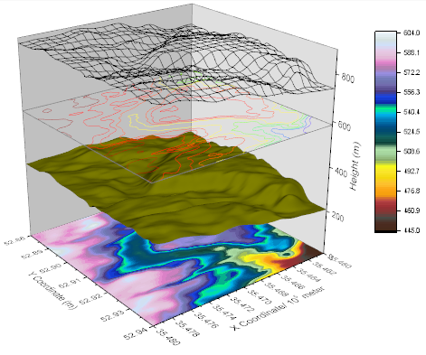
Origin-Version mind. erforderlich: Origin 2015 SR0
Was Sie lernen werden
Dieses Tutorial zeigt Ihnen, wie Sie:
- mehrere Oberflächendiagramme zu einem Diagrammlayer hinzufügen.
- Oberflächendiagramme benutzerdefiniert anpassen können.
Schritte
Diagramm mit mehreren Oberflächen erstellen
Dieses Tutorial basiert auf dem Projekt: <Origin-Verzeichnis>\Samples\Tutorial Data.opj.
Sie können dieses Diagramm auch im Lernzentrum finden. (Wählen Sie Hilfe: Lernzentrum im Menü oder drücken Sie die Taste F11. Öffnen Sie dann Diagrammbeispiel: 3D Surface.)
- Öffnen Sie Tutorial Data.opj und navigieren Sie zum Ordner Multiple Surfaces in Same Layer im Projekt Explorer (PE).
- Wählen Sie das Arbeitsblatt MBook8 und markieren Sie alle Daten. Wählen Sie im Menü Zeichnen: 3D: 3D Farbabbildung. Das Diagramm sollte folgendermaßen aussehen.
- 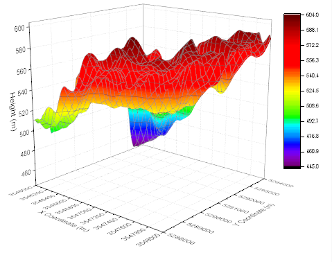
- Wähen Sie bei aktivem Diagrammfenster Grafik: Layerinhalt. Wählen Sie im Dialog Layerinhalt - Layer 1 die Matrix MBook8 im linken Bedienfeld und klicken Sie dreimal auf die Schaltfläche Zeichnung hinzufügen (der nach rechts weisende Pfeil in der Mitte des Dialogs). Klicken Sie auf OK. Die gleichen MBook8-Daten werden viermal zu dem Diagrammlayer hinzugefügt. Beachten Sie, dass zu diesem Zeitpunkt nur eine einzelne Zeichnung besteht. Die folgenden Schriitte werden das ändern.
- 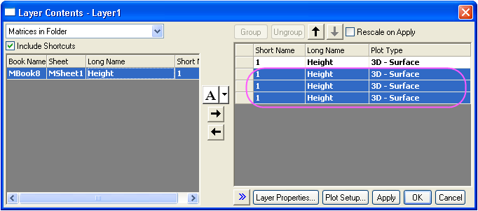
- Klicken Sie zum Öffnen des Dialogs Details Zeichnung - Diagrammeigenschaften doppelt auf die Zeichnung. Markieren Sie die erste Zeichnung im linken Bedienfeld und aktivieren Sie auf der Registerkarte Oberfläche das Kontrollkästchen Flach, aktivieren Sie Versatz in Z nach Prozent des Skalierungsbereichs, 0 = unten, 10 = oben und geben Sie 0 in dem entsprechenden Textfeld ein. Markieren Sie die zweite Zeichnung, lassen Sie das Kontrollkästchen Flach deaktiviert, aktivieren Sie das Kontrollkästchen Versatz in Z... und geben Sie 23 ein. Markieren Sie die dritte Zeichnung, aktivieren Sie das Kontrollkästchen Flach, aktivieren Sie Versatz in Z... und geben Sie 65 ein. Markieren Sie die vierte Zeichnung, lassen Sie das Kontrollkästchen Flach deaktiviert, aktivieren Sie das Kontrollkästchen Versatz in Z... und geben Sie 82 ein. Klicken Sie auf OK.
- 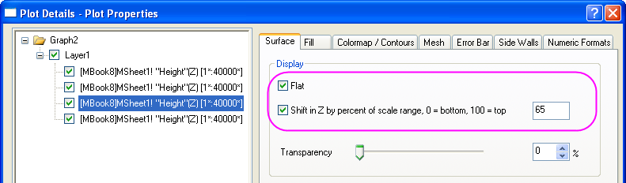
- Klicken Sie doppelt auf die Z-Achse und gehen Sie im Dialog Achsen zur Registerkarte Skalierung, stellen Sie sicher, dass das Achsensymbol Z ausgewählt ist und setzen Sie Von auf 0 und Bis auf 900.
- 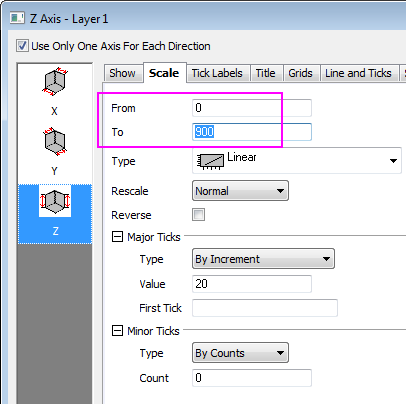
- Gehen Sie zur Registerkarte Beschriftung der Hilfsstriche und halten Sie die Strg-Taste gedrückt, um die Symbole X, Y und Z gleichzeitig auszuwählen. Geben Sie auf der Registerkarte Anzeige für den Teilungsfaktor die Zahl 100000 ein.
- 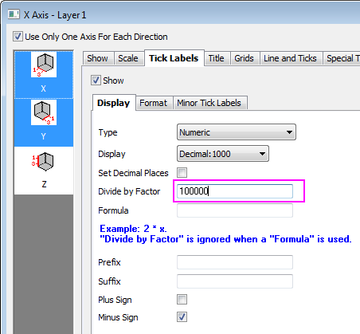
- Gehen Sie zur Registerkarte Titel, wählen Sie das Symbol X aus und geben Sie X Coordinate/ 10\+(5) meter als Text für den X-Titel ein. Wählen Sie das Symbol Y und geben Sie Y Coordinate/ 10\+(5) meter als Titeltext ein.
- 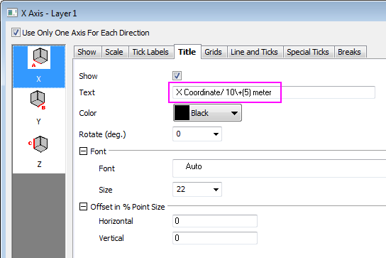
- Gehen Sie zur Registerkarte Gitternetze und halten Sie die Strg-Taste gedrückt, um die Symbole X, Y und Z gleichzeitig auszuwählen. Deaktivieren Sie unter Hauptgitternetzlinien das Kontrollkästchen Zeigen, um die Gitternetzlinien für alle Achsen zu verbergen.
- 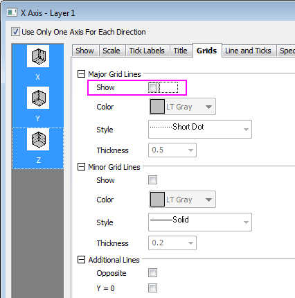
- Klicken Sie auf OK. Das Diagramm sollte jetzt vier separate Oberflächen anzeigen, wie auch unten zu sehen:
- 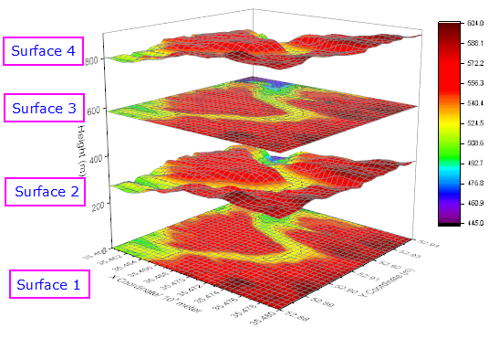
Flaches Konturdiagramm mit Farbfüllung benutzerdefiniert anpassen
- Klicken Sie zum Öffnen des Dialogs Details Zeichnung doppelt auf "Surface 1". Wechseln Sie zur Registerkarte Farbplatte/Kontur und klicken Sie auf die Überschrift Füllung, um den Dialog Füllung zu öffnen. Wählen Sie im Dialog Füllung die Option Palette laden und klicken Sie dann auf die Schaltfläche Palette auswählen, um die Palette Reef auszuwählen. Klicken Sie auf OK, um den Dialog Füllung zu schließen.
- 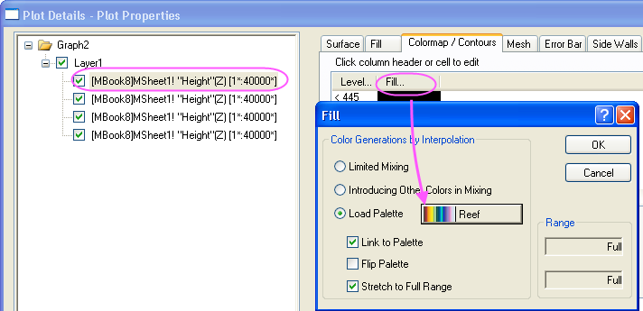
- Wechseln Sie zur Registerkarte Farbpalette/Kontour und deaktivieren Sie das Kontrollkästchen Konturen aktivieren.
- 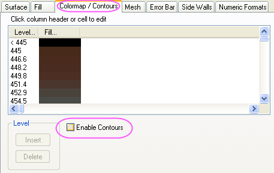
- Wechseln Sie zur Registerkarte Drahtgitter und deaktivieren Sie das Kontrollkästchen Aktivieren.
- 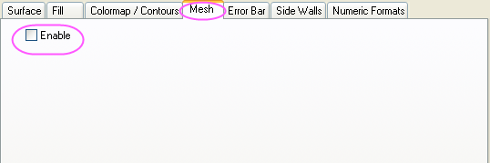
- Klicken Sie auf Übernehmen, um Ihr Diagramm zu aktualisieren.
Oberflächendiagramm mit Farbfüllung benutzerdefiniert anpassen
- Wählen Sie den zweiten Datensatz (achten Sie darauf, nicht das daneben stehende Kontrollkästchen zu deaktivieren), klicken Sie auf die Registerkarte Füllung, aktivieren Sie die Option Stückweise füllen und wählen Sie in der Auswahlliste Dunkelgelb.
- 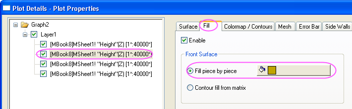
- Wechseln Sie zur Registerkarte Farbpalette/Kontour und deaktivieren Sie das Kontrollkästchen Konturen aktivieren.
- 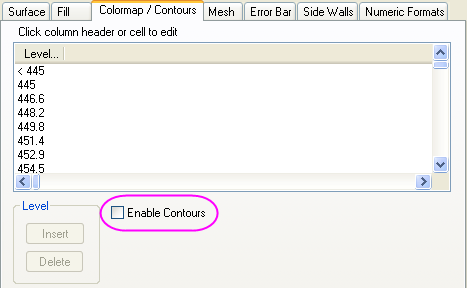
- Wechseln Sie zur Registerkarte Drahtgitter und deaktivieren Sie das Kontrollkästchen Aktivieren.
-
- Klicken Sie auf Übernehmen, um Ihr Diagramm zu aktualisieren.
Flaches Konturliniendiagramm benutzerdefiniert anpassen
- Wählen Sie den dritten Datensatz, klicken Sie auf die Registerkarte Füllung und deaktivieren Sie das Kontrollkästchen Aktivieren.
- 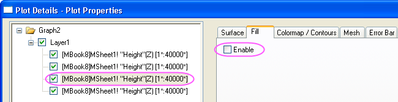
- Wechseln Sie zur Registerkarte Farbplatte/Kontur und klicken Sie auf die Überschrift Linie, um den Dialog Konturlinien zu öffnen. Aktivieren Sie in diesem Dialog das Kontrollkästchen Linie mit Farbe der Farbabbildung verknüpfen. Klicken Sie auf OK, um den Dialog Konturlinien zu schließen.
- 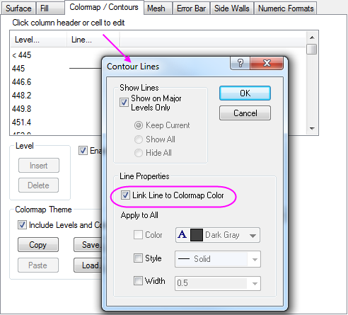
- Wählen Sie die Registerkarte Drahtgitter und setzen Sie die Linienbreite auf 1. Legen Sie im Abschnitt Haupt- und Nebenlinien die Einstellungen, wie unten gezeigt, fest und aktivieren Sie im Abschnitt Linienfarbe das Kontrollkästchen Farbabbildung verwenden.
- 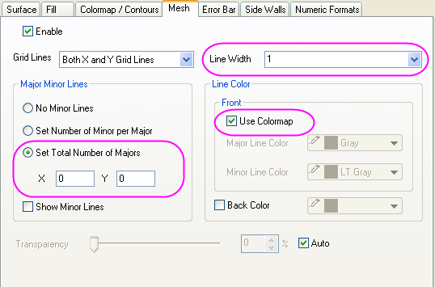
- Klicken Sie auf Übernehmen, um Ihr Diagramm zu aktualisieren.
Oberflächendiagramm mit Drahtgitter benutzerdefiniert anpassen
- Wählen Sie den vierten Datensatz, klicken Sie auf die Registerkarte Füllung und deaktivieren Sie das Kontrollkästchen Aktivieren.
- 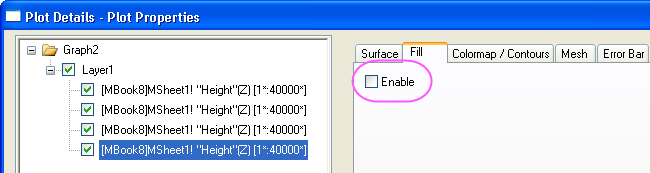
- Wechseln Sie zur Registerkarte Farbpalette/Kontour und deaktivieren Sie das Kontrollkästchen Konturen aktivieren.
-

- Wählen Sie die Registerkarte Drahtgitter und setzen Sie die Linienbreite auf 1. Legen Sie im Abschnitt Haupt- und Nebenlinien die Einstellungen, wie unten gezeigt, fest und setzen Sie im Abschnitt Linienfarbe die Farbe der Hauptlinie auf Schwarz.
- 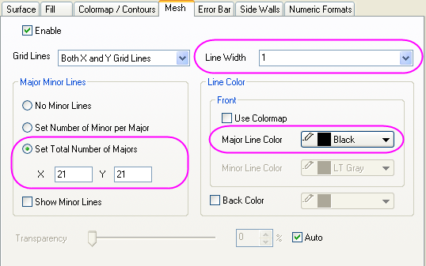
- Wählen Sie im linken Bereich Layer1. Wählen Sie auf der Registerkarte Beleuchtung die Option Direktional für Modus und setzen Sie die Gruppenelemente von Richtung, wie unten gezeigt:
- 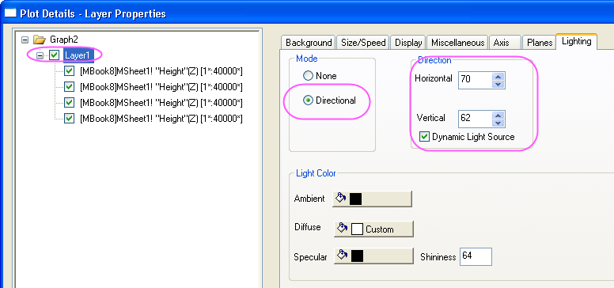
- Klicken Sie auf die Registerkarte Ebenen. Legen Sie die Farben der YZ- und ZX-Ebenen, wie unten gezeigt, fest (eine benutzerdefinierte Farbe, die ungefähr "Eierschale" entspricht, für YZ und Hellgrau für ZX).
- 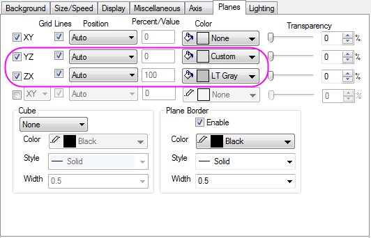
- Klicken Sie auf OK, um Ihr Diagramm zu aktualisieren.
- Drehen Sie das 3D-Diagramm ggf. nach Wunsch. Das Diagramm sollte dem Bild unten entsprechen:
-